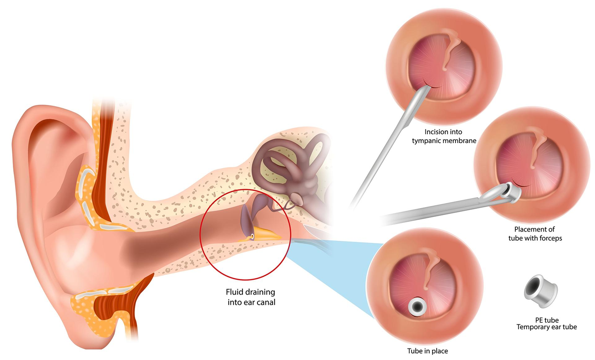

Ear tubes, also called tympanostomy tubes, are tiny hollow tubes placed in the eardrum. This procedure is done to drain fluid that builds up behind the eardrum. It is one of the most common surgeries in children.
Many children get ear infections or fluid buildup that can cause pain or make it hard to hear. Ear tubes help keep the ear dry, reduce infections, and improve hearing.
Most tubes fall out on their own after 6 to 18 months.

This is a safe and quick surgery. Most children recover well. Serious problems are rare.
Risks may include:
Bleeding or infection
Tubes staying in too long
A hole in the eardrum that does not close
Scarring on the eardrum
Rarely, hearing problems
Severe problems after an ear tube procedure do not happen often, but your child’s care team will monitor closely before and after.
Your child may need to stop eating or drinking a few hours before the procedure.
You will talk to the care team and sign consent forms.
The procedure is usually done at an outpatient surgery center or hospital.
Your child will be given general anesthesia, which is medicine to help them sleep during the procedure.
The care team gently makes a small opening in the eardrum.
Fluid is suctioned out of the middle ear.
A small tube is placed in the hole to allow air in and fluid out.
The procedure usually takes less than 15 minutes.
Your child will not feel anything during the procedure.
Your child will wake up in a recovery area.
You may see some fluid or blood from the ears at first.
Most children go home the same day.
Your child may return to school or day care the next day unless told otherwise.
It is normal to feel worried about your child having surgery. You are doing the right thing to help them feel better and hear clearly. The care team is here to help and answer your questions.
Bringing a comfort item, such as a favorite toy or blanket, for your child and staying calm can help them feel safe. Most children feel better very soon after ear tube surgery.
Will the tubes affect my child’s hearing right away?
Do we need to avoid water in the ears after surgery?
When will the tubes come out?
What follow-up visits do we need?
What signs should I watch for at home?
Contact your care team with any questions or concerns. We want you to feel comfortable with your health decisions.
Call your care team if your child has:
Fever of 102°F or 38.9°C or higher that does not go down with medicine
Ear pain that does not get better or keeps coming back
Fluid, pus, or blood draining from the ear that lasts more than 3 days or smells bad
Hearing problems or trouble hearing after the first few days
Redness, swelling, or warmth around the ear
Call if you have any questions or concerns about your child’s healing or care.
Get help right away if your child:
Has heavy bleeding from the ear that will not stop
Has trouble breathing or swelling of the face, lips, tongue, or throat
Cannot wake up, or is very hard to wake up
Has sudden confusion or trouble thinking clearly
Has a severe headache with vomiting or vision changes
Has a seizure, or shaking or jerking movements that will not stop
Thank you for trusting us with your child’s care. We are here to support you and want you and your child to feel your best. Contact us with any questions.
IF YOU HAVE A MEDICAL EMERGENCY, CALL 911 OR GO TO THE EMERGENCY ROOM.
The information presented is intended for general information and educational purposes. It is not intended to replace the advice of your health care provider. Contact your health care provider if you believe you have a health problem.
Last updated May 2025
© 2025 Mytonomy, Inc. All rights reserved.